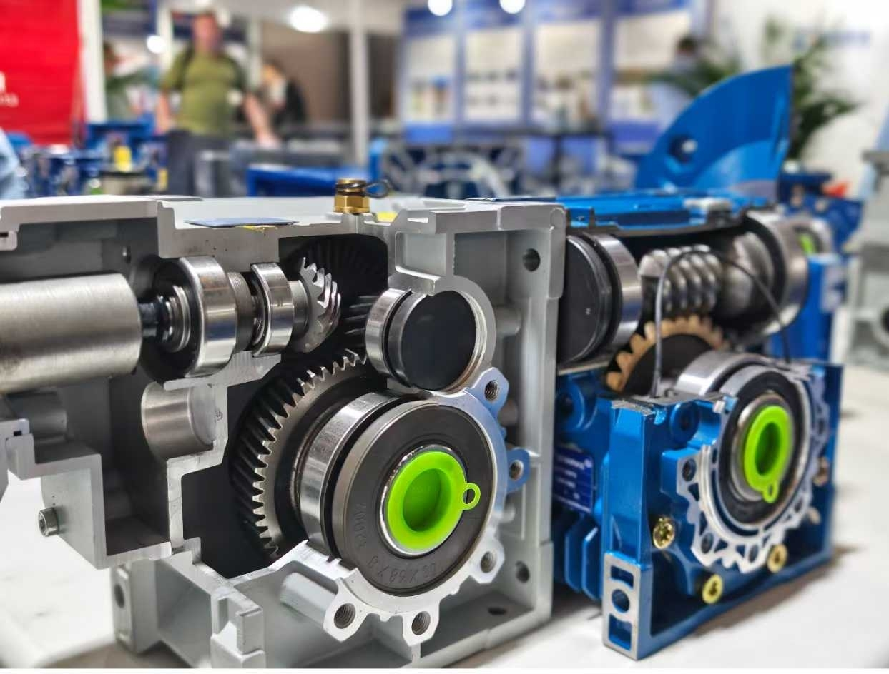

1. Start With the Required Output Speed
For a worm gearbox, calculate preliminary output speed by dividing motor input speed by the reduction ratio:
Output speed = input speed ÷ reduction ratio
For example, a four-pole motor running at approximately 1,400 rpm with a 30:1 reducer produces about 46.7 rpm. This verifies speed only; it does not confirm that a gearbox has adequate torque or thermal capacity.
2. Check Output Torque and Operating Duty
Confirm the driven machine's required output torque and how it operates: load type, running hours, starts per hour, shock loading and ambient conditions. A conveyor with steady duty and a frequently starting mixer can require different gearbox selections at the same motor power.
For continuous running, high input speed or demanding load cycles, review the worm gearbox efficiency and temperature guide before finalising the model.
3. Match the Motor and Connection Details
For a direct motor connection, confirm motor power, speed, voltage, frequency, frame size, shaft dimensions and flange arrangement. For the machine side, confirm the required output bore or shaft, keyway, retention method and any torque arm or flange-mounting dimensions.
4. Confirm Mounting Position and Installation
State whether the reducer is foot mounted, flange mounted or used with a torque arm. The mounting position affects installation clearance and may affect lubrication guidance. See NMRV worm gearbox mounting positions before installation.
What to Include in a Worm Gearbox RFQ
| Information to send | Why it matters |
|---|---|
| Application and duty | Helps evaluate load type, operation time and starts. |
| Output speed or ratio | Sets the reduction target. |
| Required output torque | Supports size and duty verification. |
| Motor data | Power, speed, voltage and frequency help confirm the input connection. |
| Input and output dimensions | Confirms motor flange, bore or shaft compatibility. |
| Mounting position and destination | Helps confirm installation requirements and quotation details. |
If replacing an existing unit, include nameplate and connection photos plus measured dimensions. Use the worm gearbox replacement checklist to avoid overlooking a critical connection detail.
Frequently Asked Questions
Does a higher ratio always mean a suitable gearbox?
No. Ratio determines output speed, while torque, duty, efficiency, thermal capacity and connection dimensions must also be checked.
Can a worm gearbox be relied on to hold a suspended load?
Do not assume so. Where load holding is required, confirm a suitable brake or holding device for the application.